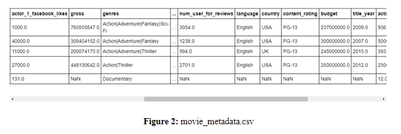
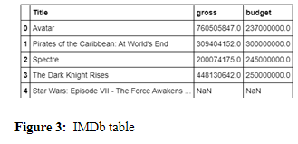
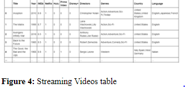

With the 2020 pandemic continuing, families are relying on in-home entertainment now more than ever. To assist families in identifying movies quickly based on certain criteria, we combined two Kaggle databases. The first database consisted of the movies available from the top four streaming networks; Netflix, Hulu, Disney + and Prime Video. We combined it with a second database from IMDb consisting of the movie sales and budget. Our newly created database will allow movie aficionados to compare the budgets and gross revenue of their favorite movies, genres, and directors. Their data exploration might lead to the realization that some streaming platforms prefer low budget indie films while others invest more in high-grossing, ‘block-buster’ budget films.
Initially, we downloaded the csv files to a local folder on our desktop and read them into pandas using Jupyter Notebook. Our first steps in cleaning up the datasets involved identifying the columns we wanted to include in our final database to ensure we would have a column in both databases to allow us to merge them together. For the IMDB dataset we kept the Title, Gross and Budget. Due to the number of columns we wanted to keep in the second dataset, it was more efficient to remove the columns we did not wish to include; ID, Age, Rotten Tomatoes, Type and Runtime. After setting the dataframes up, we created a connection to a sqlite database and created the two tables from the two dataframes. We then created a query to ensure the tables in the database were read correctly.
After creating and loading the tables, we attempted to merge the tables together. After several hours with a TA, we finally realized that the “Title” on both tables was not formatted the same. For some odd reason, on the IMDb dataset, there was an à after each title on the csv. Once we removed the extra character from the csv we were able to easily join the tables. We started with the streaming table and joined the IMDB table via an inner join on the Title column. We then created a combined table in sqlite. Finally, we wrote the table to html and exported the file to allow us to include it in our website.
 
We created a website for our new database that gives the viewer a brief description of why we created our website in addition to the data to help movie watchers find more information about a specific movie they’re watching and its corresponding available streaming platforms. One of the unique components of our website was that we created our own logo, and uploaded it to the top left of our navbar. We also went with a darker color scheme theme to compliment the traditionally dark environment of movie theatres, making it easier on the eyes for night-time or in-theater movie searches. The website is also responsive and compatible with small and large screen sizes. For example, on a smaller screen the two links in the navigation bar, “Home Page” and “Movie Data”, appear as a “hamburger style” drop-down menu. When you go to our “Movie Data” page you will see we changed the default color of our text to white so it has more of a contrast from the background. As well as we made our table responsive so as you’re scrolling through our data it isn’t just one super long webpage.